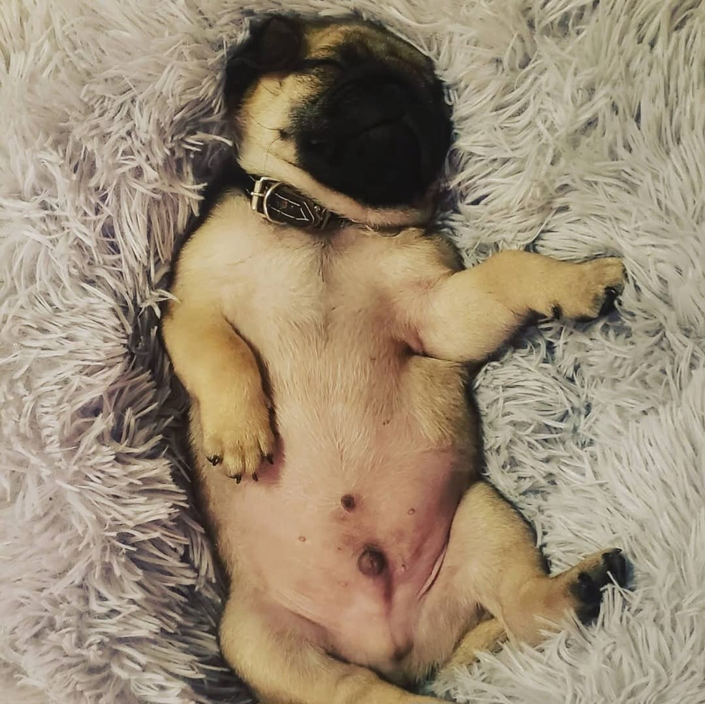
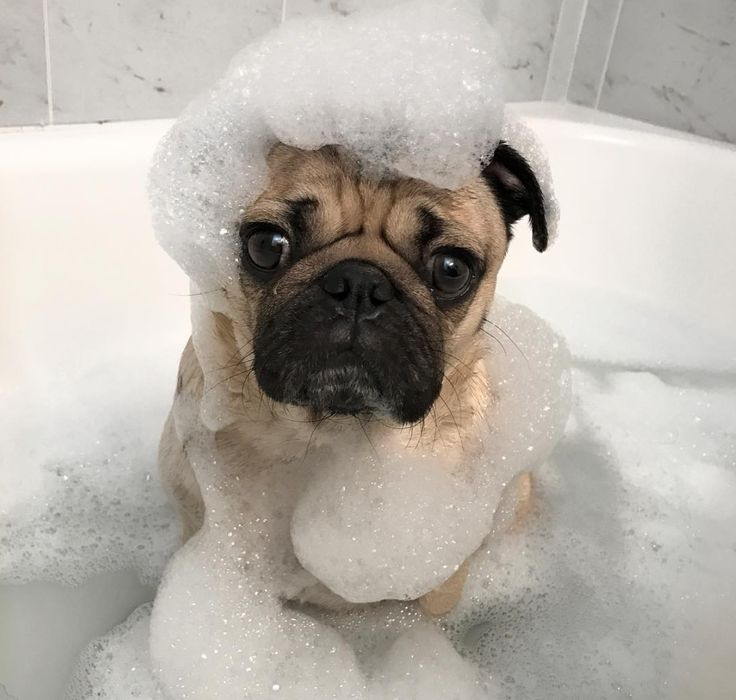
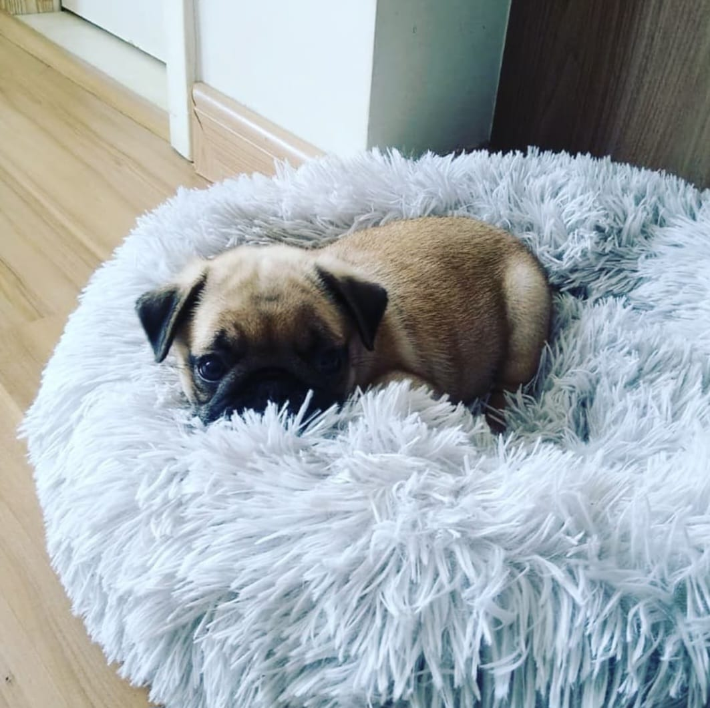
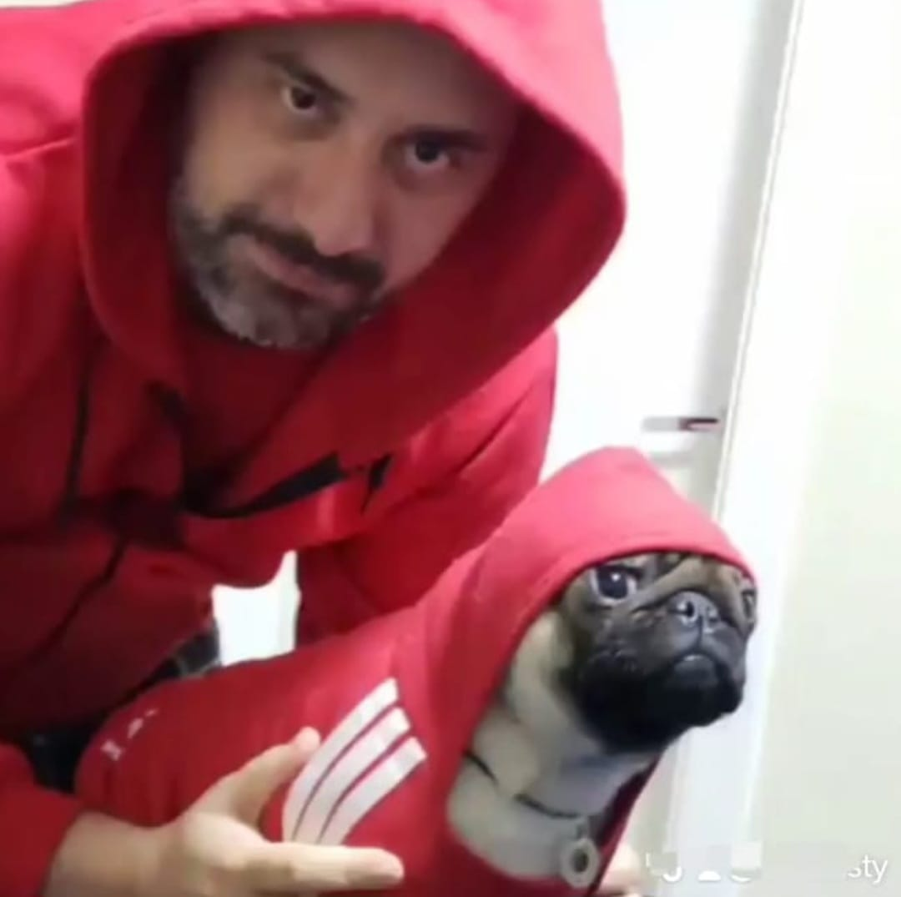
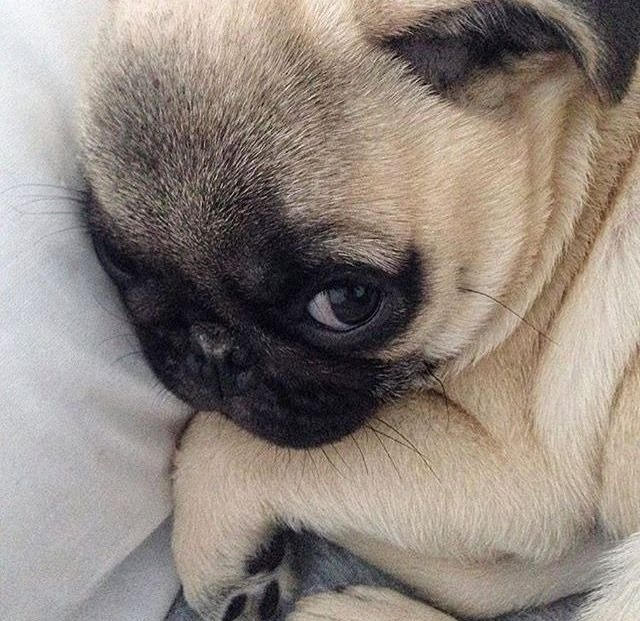
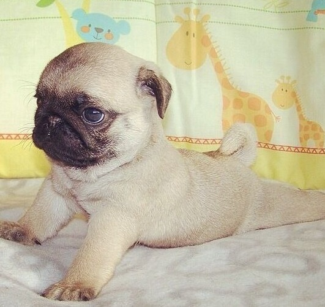
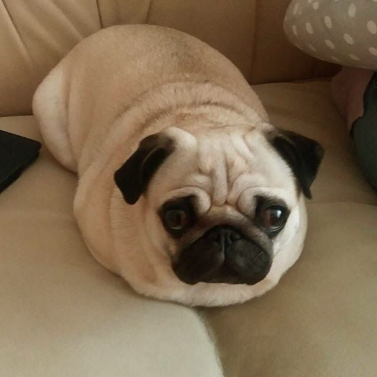

Cuidados com pugs no frioPugs são cães que lidam melhor com o frio do que com o calor, mas no Brasil não estão acostumados com o |
 |
EVITE BANHOS EXCESSIVOSNo frio, o banho pode causar queda de imunidade. NÃO DEIXE FORA DE CASABaixas temperaturas oferecem riscos de hipotermia. |
 |
AQUEÇA A CAMINHA DO SEU PUGPugs que moram em cidades quentes e não estão acostumados podem sentir muito frio. |
 |
ROUPINHAS PODEM AJUDARUse roupinhas de algodão leves e confortáveis, sem apertar as dobrinhas. MANTENHA A VACINA DE GRIPE EM DIAPrincipalmente se o clima estiver seco, faça inalação com 3 ml de soro fisiológico pelo menos 1x ao dia. |
 |
5 erros que encurtam a vida do seu filho pugTer um pug é uma alegria imensa, mas alguns hábitos comuns podem prejudicar — e até encurtar — a vida do seu melhor amigo. Conheça os erros mais frequentes que tutores cometem sem perceber e saiba como evitá-los para garantir mais saúde e anos felizes ao lado do seu pug! |
 |
Não cuidar dos dentes pede afetar vários órgãos: |
  |